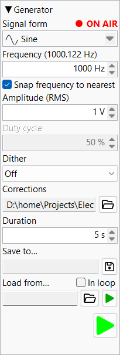

Produces test signals routed to the configured output device. Two engines coexist in this pane and are mutually exclusive: the tone generator (sine / sweep / noise / etc.) and the WAV-file player. Starting one stops the other.

Drop-down combo with nine waveforms. Each entry has a small
pictogram showing the waveform shape. Changing the form
reconfigures the surrounding controls — the duty-cycle field
enables for Rectangle and Triangle,
the sweep controls appear for Linear sweep and
Log sweep, the frequency field disables for the
noise variants.
| Form | Notes |
|---|---|
| Sine | Pure tone, DDS-driven. |
| Sine compensated | DDS-corrected so the actual emitted frequency exactly matches the requested value. |
| Triangle | Adjustable duty cycle (asymmetric ramp). |
| Rectangle | Adjustable duty cycle (high-time fraction). |
| White noise | Uniform-random samples. |
| Pink noise | Gaussian source via Voss–McCartney. |
| Pink noise linear | Flat-amplitude white source via Voss–McCartney. |
| Linear sweep | Chirp with linear-in-time frequency ramp. |
| Log sweep | Farina logarithmic chirp — equal energy per octave. |
The dot beside the label ON AIR is a 14 px red LED that lights whenever either the tone generator OR the WAV-file player is producing audio. The label text blinks between bright and dim red at ~1 Hz while audio is being emitted, and fades to grey when both engines stop.
Periodic waveforms only. Type a value or use the up/down arrows to step. The mouse wheel scrolls ±5 % of the current value; the arrow buttons step ±1 Hz.
The label may show a bracketed annotation — e.g.
Frequency (1000.122 Hz) — when the snap-to-FFT-bin
correction or DDS quantisation produces an emitted frequency
slightly different from what you typed. The bracketed value is
the actual emitted frequency.
Checkbox. When on, the emitted frequency snaps to the nearest FFT bin for the current FFT-analyser length. Useful for clean spectrum measurements: with snap on, the fundamental sits exactly on a bin and window-leakage doesn't pollute the harmonic estimates.
Active only for Rectangle and Triangle.
Expressed as a percentage (1 % .. 99 %, three decimal places).
Each waveform remembers its own value independently, so
switching between Rectangle and Triangle restores their last
duty.
Visible only when Linear sweep or Log sweep
is selected. Replaces the single frequency field with a block of
sweep parameters.
Hz. The chirp begins here. Wheel ±5 %, arrows ±1 Hz.
Hz. The chirp ends here. Same stepping as start frequency.
Seconds. Total chirp length. Wheel ±5 %, arrows ±1 s.
Seconds. Amplitude ramp at the start of the chirp, suppressing the click that an abrupt amplitude step would cause. Wheel and arrows step ±0.001 s.
Seconds. Same as fade-in but at the chirp's end.
Checkbox. When on, the sweep restarts as soon as it ends, in a continuous loop.
The output level. Accepted units: µV, mV,
V, dBV, dBFS (case-insensitive).
Wheel: ±5 % of the current value. Arrows: ±1 unit step.
For the metric units (µV / mV / V) the display auto-rescales as
you cross decade boundaries so the number stays readable.
Note: the dBFS unit references the output device's full-scale level; 0 dBFS is the maximum the DAC can produce. dBV is referenced to 1 V RMS regardless of device.
Read-only drop-down (rebuilt to match the output bit-depth on
open). Selects how many LSBs of triangular dither are added
before quantisation. Off disables dither;
1 .. N add 1 .. N LSBs (N = output bit-depth).
Dither breaks up periodic quantisation patterns at very low
output levels.
Optional CSV file describing DAC harmonic compensation: each row gives a frequency, harmonic number, and a complex correction coefficient. The generator pre-distorts the output so the chosen harmonics cancel at the analyser side. Use the folder button to browse for a file; clear the path field to disable.
Seconds. Length of audio to write when using Save to. Independent of the live emission — the file is rendered in one pass using current generator settings.
Read-only path + floppy-disk button. Clicking the button opens
a file dialog; the selected file's extension picks the format
(.wav / .flac / .aiff /
.aif). Confirming the dialog writes the file
immediately using the current generator settings and the
duration above.
Reads an existing WAV/FLAC/AIFF file and plays it back to the output device. The folder button opens a file dialog; the In loop checkbox repeats the file on EOF. The loop toggle is live — flipping it during playback takes effect at the next EOF.
Small play LED next to the path field. Lit while the file is playing, dim otherwise. Starting file playback stops the tone generator if it was running (and vice versa for the main play button).
Large play button anchored to the bottom-right of the pane. Starts the tone generator with the current form / frequency / amplitude. While running, the icon shows the lit play state and the ON AIR indicator blinks. Pressing it again stops emission. Starting the main player stops the WAV-file player if it was running.